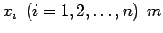
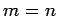

Bei vielen praktischen Aufgaben werden für n unbekannte Größen  Bedingungen in Gleichungsform gestellt:
Die Unbekannten xi sind so zu bestimmen, daß sie eine Lösung des Gleichungssystems (19.23) darstellen. In der Regel ist , d.h., die Anzahl der Unbekannten stimmt mit der Anzahl der Gleichungen überein. Im Falle m > n bezeichnet man (19.23) als überbestimmtes System, im Falle m < n als unterbestimmtes System.
Überbestimmte Systeme haben in der Regel keine Lösung. Man formuliert deshalb die zu (19.23) gehörende Quadratmittelaufgabe
als Ersatzaufgabe. Im unterbestimmten Fall können im allgemeinen n-m Unbekannte frei gewählt werden, so daß die Lösung von (19.23) von n-m Parametern abhängt. Man spricht dann von einer (n-m)-dimensionalen Lösungsmannigfaltigkeit.
Man unterscheidet lineare und nichtlineare Gleichungssysteme, je nachdem, ob in (19.23) die Unbekannten nur linear oder auch nichtlinear auftreten.